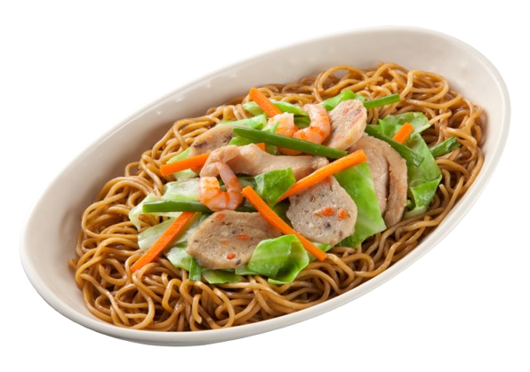
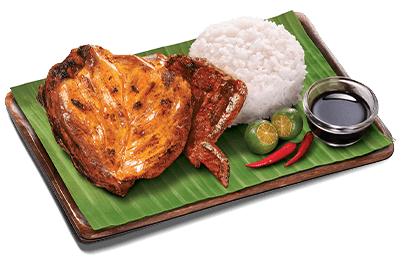

Our Signature Dishes


Bicol Express
A spicy stew made with pork, coconut milk, chili peppers, and shrimp paste.
₱ 150.00Order Now

Order Now
Pancit Canton
Stir-fried egg noodles mixed with meat, shrimp, and vegetables.
₱ 120.00Order Now

Order Now
Chicken Inasal
A flavorful grilled chicken dish marinated in vinegar, calamansi, garlic, and annatto.
₱ 200.00Order Now